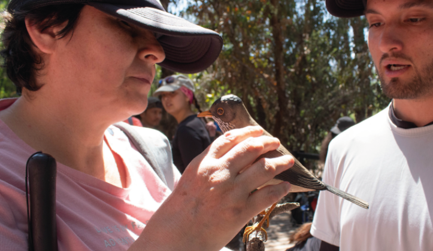
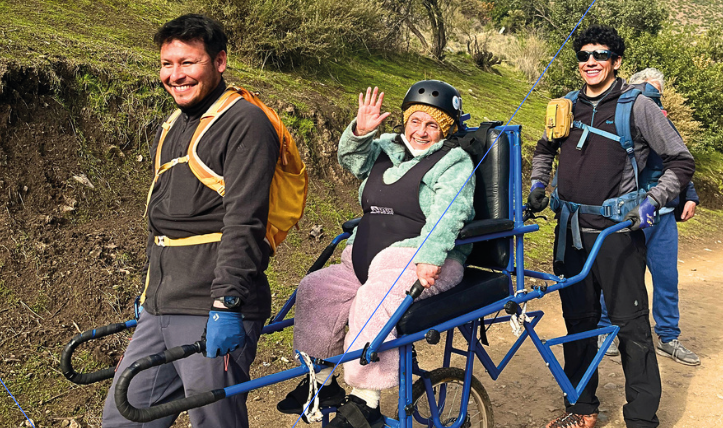
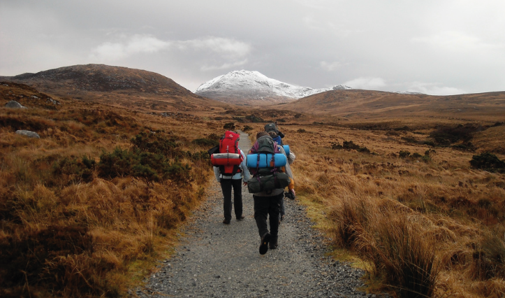
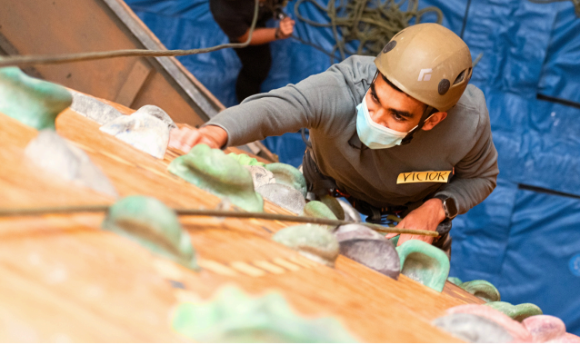

Descubre la Naturaleza sin Barreras
Mente Libre es una agencia especializada en ecoturismo accesible, comprometida con el diseño universal, el respeto y la empatía. Permitimos que todas las personas, sin importar sus capacidades, disfruten de la naturaleza de forma segura, entretenida y sostenible.
Servicios de Ecoturismo Inclusivo
- Senderismo inclusivo: Caminatas accesibles para explorar flora, fauna y funga.
- Escalada sensorial: Escalada adaptada con plena accesibilidad y seguridad.
- Interpretación natural: Estrategias sensoriales para descubrir la biodiversidad local.
- Reconocimiento de flora y fauna: Cursos interpretativos para aprender sobre el entorno.
- Iniciación al trekking: Técnicas básicas para iniciarse en el senderismo seguro.
- Taller de escalada deportiva: Aprende técnicas básicas de forma segura y adaptada.
- Taller "No Deje Rastro": Educación ambiental para minimizar el impacto en la naturaleza.
- Identificación sensorial de aves: Observación e interpretación de avifauna con recursos inclusivos.
Todos nuestros servicios incluyen:
- Guías especializados en ecoturismo accesible y primeros auxilios.
- Alimentación tipo box lunch con opciones vegetarianas, veganas y celíacas.
- Registro audiovisual inclusivo para recordar la experiencia.
- Opcionales: transporte, sillas de senderismo adaptado e intérpretes de Lengua de Señas Chilena.
¿Quiénes Somos en Mente Libre Ecoturismo?
En Mente Libre trabajamos para brindar experiencias ecoturísticas accesibles e inclusivas, considerando especialmente a personas con discapacidad. Facilitamos el acceso a la información con herramientas digitales accesibles como lectores de pantalla y descripciones detalladas en imágenes.
Imaginamos nuestra plataforma como un espacio inclusivo que permita reservar experiencias directamente, promoviendo la autonomía de nuestros visitantes y su conexión con la naturaleza.
Actividades destacadas en la naturaleza
- 
Talleres de Senderismo - 
Talleres de Trekking - 
Talleres de Escalada
Testimonios de Nuestros Participantes
"Excelente atención, siempre dispuestos a ayudar. Las actividades son totalmente accesibles y pensadas para que cualquier persona, sin importar sus capacidades, pueda disfrutar de la naturaleza con comodidad y seguridad." - Participante 1
"Fue la mejor experiencia de senderismo que he vivido. Todo fue inclusivo de verdad, me sentí parte del grupo en todo momento y pude disfrutar la naturaleza sin dificultades. 100% recomendado." - Participante 2